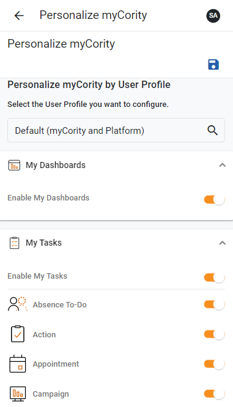
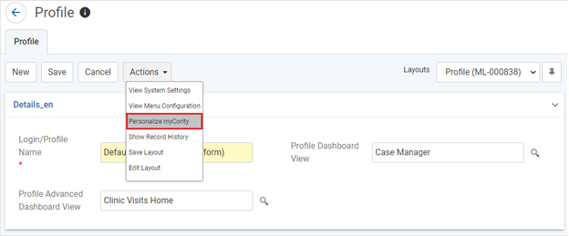

Administrators can grant or limit users’ access to the views and record types in myCority. This will provide the user groups within an organization a more personalized and intuitive experience when using the application.
The customization settings are located on the Personalize myCority screen in myCority. By default, the ability to create myCority customizations is only available to users with the Admin role. If you want this functionality to be available to other users, you must grant the mycorityadmin security module to their role. Otherwise, the Personalize myCority screen will not be available.

To personalize the myCority settings for a user profile:
An administrator can also access the Personalize myCority settings from the Cority platform:

Picklist Views in Cority Admin:
myCority users will see any out-of-box (OOB) and customer-configured picklist views that have ‘Standard View’ specified. Standard picklist views do not have to be added to Roles > Granted Views to be available in myCority if you want them available for all users.
myCority users will not see OOB views or standard picklist views that meet one of the following conditions:
When a sublist or picklist view is explicitly added to ‘Granted Views’, it will be hidden from users not associated to a role granted that view.